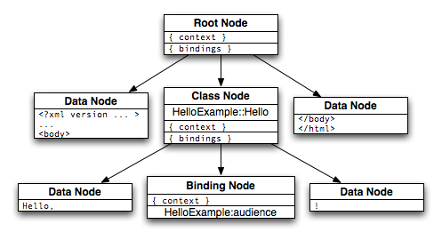

madrone takes most of its inspiration from Lift, a template framework for the Scala language (http://liftweb.net).
Madrone uses browser-renderable XHTML files as its templates. "Active" elements of pages are wrapped in user-defined XHTML tags. Those tags directly map to user code- when the page is evaluated, functions are triggered which may influence the subsequent rendering of the template.
Madrone is able to operate using a non-blocking model. Template elements which use disk or network IO should be carefully programmed to remain non-blocking- judicious use of asynchronous disk, database, and network libraries should make this easy. Using this model, various elements of madrone templates are evaluated in parallel and should retain good performance.
templates/example.xhtml and mods/HelloExample.pm.
The .xhtml file is the template- it's valid XHTML, and will render properly in any browser. You can style the page however you want using included CSS files, embeded images, and included javascript. Your browser will do the right thing.
The template includes tags outside the w3c XHTML namespace. In order to remain legal XHTML, any madrone template must declare these outside namespaces in its <html> tag. This example declares the <madrone:HelloExample> namespace; the tag
Additional namespaces may be declared for variable substitution. In this example the "helloExample" namespace is declared for that purpose.
templates/example.xhtml:
<?xml version="1.0" encoding="iso-8859-1"?>
<!DOCTYPE html PUBLIC "-//W3C//DTD XHTML 1.0 Transition//EN" "http://www.w3.org/TR/xhtml1/DTD/xhtml1-transitional.dtd">
<html
xmlns="http://www.w3.org/1999/xhtml"
xmlns:madrone="http://github.com/joshuathayer/madrone"
xmlns:helloExample="http://github.com/joshuathayer/madrone"
>
<head>
<title>hello!</title>
<link rel="stylesheet" href="../static/css/style.css" type="text/css" />
</head>
<body>
<madrone:HelloExample.Hello>
Hello, <helloExample.audience>world</helloExample.audience>!
</madrone:HelloExample.Hello>
</body>
</html>
The code referenced in the template exists in mods/HelloExample.pm:
package HelloExample;
sub Hello {
my ($self, $context, $bindings, $cb) = @_;
$bindings->{'HelloExample'}->{'audience'} = "universe";
$context->{nodeseq}->walk_all_nodes($context, $bindings, $cb);
}
The output of evaluating the template:
<?xml version="1.0" encoding="iso-8859-1"?>
<!DOCTYPE ... >
...
<html>
<body>
Hello, universe!
</body>
</html>
Template processesing begins with parsing the template into a tree structure. Many tags don't matter to madrone: these are passed over and treated simply as data. We only care about the special madrone-specific tags. Those tags become instances of various madrone Node classes, which make up the nodes of the tree structure.
Documents are parsed using the AWP::Parser class. After some setup, invoking the parsefile() method on the Parser instance will return a tree of Nodes ready to be evaluated. The xhtml file included above parses into the tree diagrammed here.
Evaluation is a recursive process which starts at the leaf node: the entire process can be described from the point of view of any one node. Different node types (see next section) have different behavior at evaluation-time, but the basic idea is the same for all of them, and boils down to
Context is important. In the madrone world, "context" means any data which is request-specific: a user object or a database record for example. Every time a node is asked to evaluate itself, it is passed a hash which represents the context in which it should operate. The context hash originates with the application which is running the template, and by the time any one Node sees it, it may have been modified by any number of enclosing Nodes.
If the node being evaluated might modify the context (by pulling a record out of the database, for example), it needs to do that before the next step- evaluating its children.
Many nodes have children, as explained above. If a node has children, it is that node's responsibility to evalute those children. If the children might behave differently in different contexts, then the context must be mutated appropriately before evaluating each child. A child, after being asked to evaluate itself, will eventually return a scalar to the calling node.
When asked to evaluate itself, a Node is passed a callback function which it should use to pass data back to the calling code. If a node has child nodes, it may wait for all its children to return data before collating that data into a scalar and calling its own callback function. (On the other hand, there's no reason a node with children can't call its own callback immediately, and use the data returned from its children for other uses, or nothing at all).
If a node has no children, it generally will just return a scalar representation of itself. Most likely, this is just simple XHTML data in the xhtml namespace, which madrone just treats as scalar data.
Note that the callback should be called with an arrayref. The calling code will eventually join('',@_) the arrayref into a scalar to be returned to the browser.
When the madrone application calls the evaluate method on the root node, it sets in to motion a chain of "evaluate" calls which reach down in to the tree representing the XHTML document. Each node follows the rules above, and eventually an arrayref of scalars of valid XHTML, programmatically generated based on the context of the request, is returned to the application ready for display in the user's browser.
Class Nodes map directly to a method in a class the programmer has defined. In the example,
<madrone:HelloExample.Hello> is a Class node which, when evaluated, will call the Hello method of the HelloExample class. The method will be passed the list of nodes which make of the children of the <madrone:HelloExample.Hello> tag, which it is responsible for evaluating. Any code the programmer writes to make a dynamic application dynamic will correspond to Class Nodes.
Binding Nodes implement simple variable substition. A class node may modify the $bindings parameter, which drives the substitutions made by a Binding Node when it is evaluated. The original data in a Binding Node is discarded and replaced by either the empty string or the approprite data in the $bindings hash. In the example above, <helloExample.audience> is a Binding Node. In that example, the word "world" is replace by the data in $bindings->{HelloExample}->{audience}.
When the parser comes across tags or CDATA which are not special to madrone, it creates a Data Node to hold them. This simple node is always a leaf node in the tree which represents the XHTML file. When asked to evaluate itself, it simply returns the data itself.
Named Nodes implement cross-template Node pointers. A named node is a Class Node that is registered in a Parser-wide dictionary. At evaluation time, a named node can be "used" by a special node. Evaluation is then passed to the Named Node, even if that Named Node was not defined in the current template. This allows, for example, a common header or footer across multiple templates.
As mentioned, madrone is able to operate in a non-blocking environment. In this environment, it's essential to avoid blocking on IO events. Thankfully, there are a number of libraries which make this easy. In particular, the AnyEvent family of libraries is well-suited for the task.